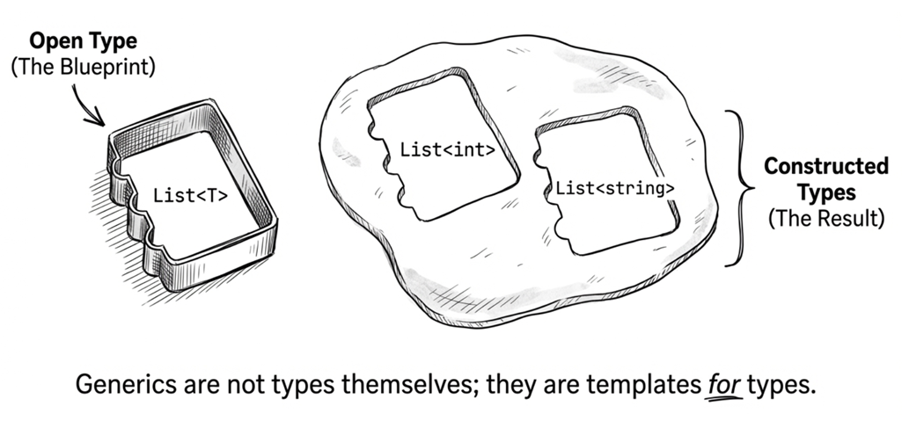
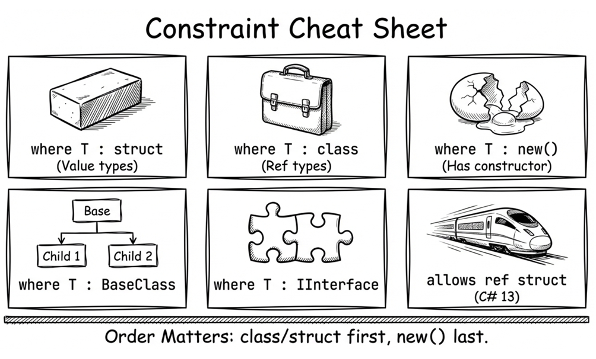
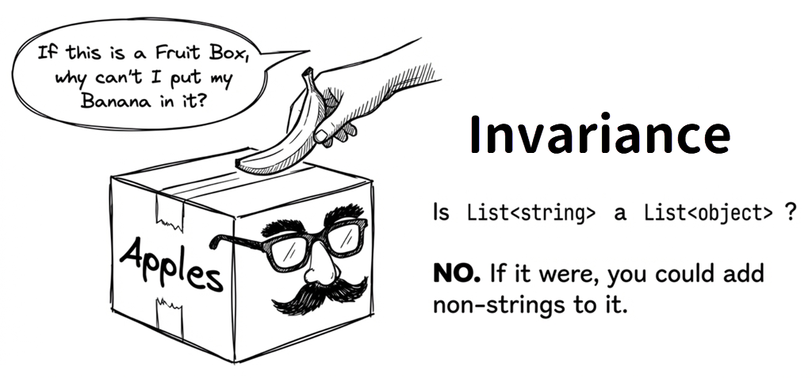
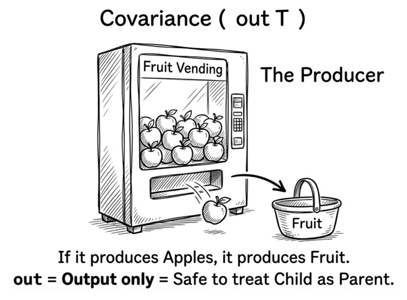
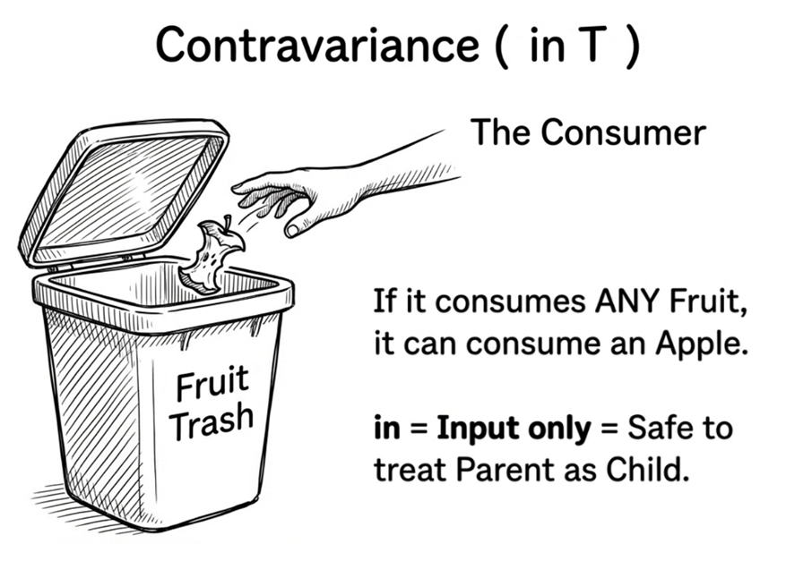

Chapter 7: Generics
Bruce: “Robin, why do you have so many custom collection classes? Things like
EmployeeList,CustomerList,VendorList… do they have special behavior?”Robin: “Not really. Back when we used
ArrayListto store these objects, every read needed a bunch of casts. To avoid manual casting, I made separate list classes for employees, customers, and vendors. It took time up front, but the payoff was compile-time type safety, no manual casting, and cleaner code.”Bruce: “Fair. But… have you considered generics?”
This chapter explores C# generics. Generics are an important abstraction in modern C#, letting you write type-safe, reusable code while avoiding unnecessary performance costs and runtime cast errors. They also align well with the DRY principle (Don’t Repeat Yourself).
7.1 Why do we need generics?
Before looking at generic type syntax, let’s first see what becomes harder without generics.
The cost of manual casting
Suppose we need to process a set of integers, but we do not know the count in advance, and the number of elements may change at runtime. A fixed-size array is not a good fit, so we use a collection. Without generics, we might choose ArrayList:
This has three problems:
- Verbose: Every read requires a cast.
- Performance: When a loop runs many iterations, these casts repeat many times. Each cast is small, but frequent casts add overhead.
- Type safety: The biggest issue. See the next example.
If you write this:
DateTime dt = (DateTime)intList[1]; // Compiles, fails at runtimeThe compiler allows it, but it fails at runtime because int cannot be cast to DateTime.
This is a classic type-safety issue. With ArrayList (which stores object), the compiler cannot protect you. You can insert anything, and you can cast it to anything, but the risk falls entirely on you.
Manual casts are verbose, slightly slower, and they remove the compiler’s safety net.
The cost of custom collections
Without generics, one workaround is the approach in the opening story: build a separate collection class per element type. For example, if we need an integer list, we might write an IntList:
public class IntList
{
private ArrayList _numbers = new ArrayList();
public void Add(int value)
{
_numbers.Add(value);
}
public int this[int index]
{
get { return (int)_numbers[index]; }
set { _numbers[index] = value; }
}
}
public class StringList
{
private ArrayList _strings = new ArrayList();
public void Add(string value)
{
_strings.Add(value);
}
public string this[int index]
{
get { return (string)_strings[index]; }
set { _strings[index] = value; }
}
}You end up writing a pile of near-duplicate classes: IntList, StringList, StudentList, EmployeeList, and so on. Their purpose is just to avoid manual casts and reduce the risk of runtime type-conversion surprises. The code is cleaner to use:
But you have created a lot of duplicated code. If you ever add a new method to the list, you must update every class. Copying is quick; maintaining those copies is not, and it increases testing costs.
What we want is a single reusable collection definition that still gives us compile-time type safety. Generics are designed for exactly this kind of need.
The generic approach
Continuing with the IntList and StringList example, switching to generics lets you replace most of that duplicated code with one reusable definition. .NET provides generic collections like List<T> (read “List of T”). List is the collection type, and <T> is the type parameter supplied when you use it.
Do not worry about every syntax detail yet. Here is the same example with generics:
No casts. No custom collection classes. And because the element type is known at compile time, tools like IntelliSense can provide the correct types while you code.
Source code: DemoWhyGenerics
After seeing the basic use and benefits, let’s look at generic syntax.
7.2 Generics in depth
The term generic essentially means broadly applicable or universal. You define a single type and reuse it across many different contexts—effectively writing the logic once and reapplying it many times.
Consider our earlier list example. We need lists for integers, strings, employees, and customers. All of them share the exact same behavior; only the underlying element type differs. Generics allow you to extract that changing part as a parameter. You write the “fixed” logic once and supply different type arguments as needed.
Next, we’ll define our own generic type.
Generics, type parameters, constructed types
Generics can be used with classes, interfaces, delegates, and methods. Here is the basic syntax for a generic class:
The angle brackets <> contain type parameters (T1, T2, …, Tn), which represent the variable parts. You can have one or many.
By convention, a single type parameter is named T (for example, List<T>). For multiple parameters, use descriptive names.
The generic collection Dictionary<TKey, TValue> is a good example: you can immediately see that each entry contains a key and a value, and the actual types for those two parts are supplied when you use the collection.
Note that ClassName<T> is not a concrete runtime type. It is a type blueprint with slots for type arguments, so you cannot instantiate this open type directly. If we casually call it a “template” here, that is only a metaphor; it is not the same as C++ template expansion at compile time. By contrast, .NET generics are expanded at runtime by the JIT compiler, which is covered in Section 7.7.
Supplying type arguments creates a constructed type (also called a closed type), such as Dictionary<int, string> or Dictionary<string, Employee>. The template itself is an open type.
Generics are templates for types
A common metaphor: a class is like a cookie cutter, and objects are the cookies. Build the cutter once, stamp out as many cookies as you need.
Generics are like the blueprint for the cookie cutter itself.

Or more directly: generics are templates for types. If List<int> and List<string> are two different cookie cutters, then List<T> is the template used to create them. It has an empty slot (T) that you fill with a concrete type to create a usable blueprint.
Only constructed types can create objects:
If you are inside a generic class or generic method, and T is in scope there, then new List<T>() is perfectly valid. For example:
Whether T is available depends on the generic scope you are in. If T is declared on the current class or method, you can use it in that scope to construct other generic types.
Custom generic classes
Suppose you want your own generic list named MyGenericList.
To keep the focus on the syntax, the example below deliberately reuses ArrayList from the earlier discussion to show how the element type can be turned into a type parameter. In real code, though, you would typically store the data in T[], List<T>, or another generic collection so you keep type safety while also avoiding unnecessary boxing and unboxing. Here is a basic implementation:
Compare this to the manual IntList and StringList classes. Everywhere the element type used to change is now represented by the single type parameter T.
Creating instances looks like this:
Here you see two constructed types: MyGenericList<int> and MyGenericList<Employee>. In other words, the same generic definition can accept different type arguments at use time, forming different constructed types that can then create their own object instances.
Constructors and finalizers
Constructors and finalizers for a generic class do not include type parameters in their names:
Type parameters appear only in class definitions and member signatures, but constructor and finalizer names must omit the type parameter (like MyGenericList, not MyGenericList<T>).
You can still use T inside constructors:
The key point is not that constructors have special generic syntax. They simply have access to the class-level type parameter T, just like other members do.
Default values
Because T can be any type, you cannot hardcode a default value. Use the default operator:
default returns:
- Value types:
0,false, or a zeroed struct - Reference types:
null
If Nullable Reference Types (NRT) are enabled in the project, a method like this that may return null is often written with a T? return type. That makes the intent clearer and avoids nullable warnings more cleanly.
C# version differences:
Practical example: clearing an array
The Zap method below clears any array; the key point is how it handles default values:
If Nullable Reference Types are enabled, code like this sometimes uses default! to say, explicitly, “Yes, this may become null here, and that is intentional.” The ! here only suppresses nullable warnings at compile time; it does not change the actual value or prevent null from appearing in the array.
Source code: DemoGenericClass
In the sample project,
MyGenericList<T>has already been rewritten to store data in aT[], which is closer to a practical implementation. The earlierArrayListversion in this section is intentionally simplified to highlight the generic syntax.
Generic attributes (C# 11)
Before C# 11, if you wanted to declare an attribute with a Type parameter, you had to write:
This is verbose and forces you to use the typeof operator. Starting in C# 11, you can declare a generic attribute:
Usage can directly specify the type argument:
The restriction is not just that the type argument must be fully constructed (for example, string rather than an open T). It must also satisfy the same limitations that apply to typeof(...) in attribute metadata. In other words, types such as dynamic and List<string?> still cannot be used as type arguments for generic attributes, because they cannot be represented there in a stable way.
More precisely, dynamic is treated as object at the CLR level, and the nullable annotation in string? is not part of the CLR type system, so neither can appear in attribute metadata in the way you might expect. This restriction ensures that the type arguments of a generic attribute can be represented in CLR metadata in a stable, well-defined way.
Source code: DemoGenericAttribute
7.3 Type parameter constraints
So far, we’ve used generics primarily to store values of different types.
However, generic code becomes much more useful when you need to interact with T—such as by calling its methods or accessing its properties. To do that safely, the compiler needs to know more about what T can do.
For example, suppose you want a generic list that can compare its items. You expect the items to have a CompareTo method, but without further information, the compiler cannot guarantee it:
The error is:
Tdoes not contain a definition forCompareToand no extension methodCompareToaccepting a first argument of typeTcould be found (are you missing a using directive or an assembly reference?)
Even if the type you eventually pass really has CompareTo, the compiler still cannot allow this code based on that hope alone.
That is because without additional information about T, the compiler must assume T could be anything. At that point, T is treated like object, so only object members are available.
But that still does not solve the real need: sometimes you really do need to access specific members of the type argument inside generic code. At that point, do not try to solve the problem with an as cast like this:
This bypasses compile-time checks but risks runtime failure. Note that this uses the as operator, not an explicit cast. If obj1 doesn’t implement IComparable<T>, the as expression evaluates to null, and the subsequent .CompareTo(obj2) call can throw a NullReferenceException. The correct solution is the where clause.
The where clause
You can constrain a type parameter like this:
The where clause tells the compiler: any type argument for T must implement IComparable<T>. If not, compilation fails.
This is called a generic constraint. In practice, a constraint tells the compiler what capabilities a type parameter must provide.
Multiple constraints
You can require multiple interfaces and, optionally, a base class (only one base class is allowed because C# does not support multiple inheritance):
Rules:
- Only one base-class constraint.
- Multiple interface constraints are allowed.
- If you have a base class, it must come first.
class and struct constraints
class or struct can constrain reference types or value types:
These must come first in the constraint list:
new() constraint
If you need to create instances of T, you must add the new() constraint:
The new() constraint tells the compiler that T must have an accessible parameterless constructor, so new T() is legal inside the generic type or method.
Two rules:
Rule 1: new() usually comes last
If you use the C# 13 allows ref struct anti-constraint, that anti-constraint must appear after new().
Rule 2: new() cannot be combined with struct
struct already guarantees that new T() is valid, so new() would be redundant. Starting with C# 10, a struct can also declare its own parameterless constructor, but whether it uses the implicit one or a custom one, the struct constraint already guarantees that new T() can be used.
Common constraint combinations
// Nullable reference type
public class NullableContainer<T> where T : class?
{
private T? _value;
}
// Non-nullable reference type (with NRT enabled)
public class NonNullContainer<T> where T : class
{
private T _value = default!;
}
// Interface + parameterless constructor
public class Repository<T>
where T : IEntity, new()
{
public T Create() => new T();
}
// Base class constraint
public class DomainService<TEntity, TRepository>
where TEntity : Entity
where TRepository : IRepository<TEntity>
{
// ...
}
// C# 13: allows ref struct (e.g., Span<T>)
public class SpanWrapper<T> where T : allows ref struct
{
// T can be Span<int>, but must follow ref safety rules
public void Process(T data) { }
}allows ref struct constraint (C# 13)
Before C# 13, a generic type parameter T did not allow ref struct types (such as Span<T> or ReadOnlySpan<T>) by default. This was a vital safety measure to ensure that stack-only structures never “escaped” to the heap—something that could happen through boxing or by being stored in a class field.
However, this also limited the use of generic algorithms in high-performance scenarios. To address this, C# 13 introduced the allows ref struct anti-constraint:
With this constraint, the compiler allows you to pass Span<int> and other ref struct types, while also strictly checking that operations inside the method do not violate ref safety rules (for example, you cannot store a variable of type T as a field in a class). This is very helpful for writing high-performance general-purpose libraries.
These constraint rules can look scattered, but in practice you usually add them step by step: add an interface constraint when you need to call an interface member, add new() when you need to create an instance, and consider allows ref struct only when you need to support types such as Span<T>.
Source code: DemoConstraints

7.4 Generic interfaces and structs
Generics also apply to interfaces and structs. Let’s start with interfaces, because they are often used to describe the contract that a family of generic types must follow.
Generic interface
For example, you can extract the list operations from MyGenericList<T> into a generic interface:
Then implement it:
The rule is the same as normal interfaces: implement all required members.
Source code: DemoGenericInterfaces
Implementing generic interfaces
There are two approaches:
Option 1: keep the type parameter open
Option 2: close the type parameter
Both compile. Option 2 is useful when you want a fixed type.
This does not compile:
If T is substituted with int, then ISayHello<T> becomes ISayHello<int>, which would make the same class implement the same interface twice. To prevent that potential conflict, the compiler rejects this declaration.
Generic structs
Generic structs use the same syntax as generic classes. A classic example is KeyValuePair<TKey, TValue>:
Usage:
The key point here is that generics are not limited to classes and interfaces; structs can also use type parameters to express “the types of this pair of values vary by use case.” KeyValuePair<TKey, TValue>, commonly used when iterating dictionaries, is a representative example of this design.
Source code: DemoGenericStructs
typeof and unbound generic types
Open generic types (like List<T>) and unbound generic types (like List<>) can both be represented at runtime as Type objects. What you cannot do is instantiate a generic type that has not yet been closed with actual type arguments. To create an object, you must first turn it into a constructed type such as List<int>.
That is because List<> is still missing its element type, so at runtime it cannot know whether you want to create List<int>, List<string>, or some other concrete version. In C#, the most common way to refer to an unbound generic type is typeof:
You can also specify closed types:
Type a3 = typeof(A<int, string>);Or, inside a generic class, you can retrieve the Type represented by the type parameter itself:
Practical use: reflection and generics
Once you know how to obtain an unbound generic type with typeof, you can fill in the actual type at runtime. The following example shows a pattern common in frameworks and containers: get Repository<>, then use MakeGenericType to create a closed type such as Repository<Customer>.
public class RepositoryFactory
{
public static object CreateRepository(Type entityType)
{
Type openType = typeof(Repository<>);
Type closedType = openType.MakeGenericType(entityType);
return Activator.CreateInstance(closedType);
}
}
// Usage:
var customerRepo = RepositoryFactory.CreateRepository(typeof(Customer));
// Equivalent to new Repository<Customer>()This pattern is common in framework design and dependency injection containers.
Source code: DemoUnboundGenericTypes
7.5 Generic methods
A generic method is a method with type parameters. It can live inside any class, struct, or interface, generic or not.
Basic syntax
Notes:
<T1, ..., Tn>are type parameters.(parameters)are formal parameters.- The
whereclause is optional.
Example:
Usage:
Type inference
If the compiler can infer type arguments from parameters, you can omit them:
The last call still needs explicit type arguments because C# generic method inference works primarily from the method arguments, not from the type of the variable receiving the return value. In other words, even if you assign the result to a DateTime variable, the compiler still cannot infer TResult from that alone.
Method-level vs class-level type parameters
If multiple methods share the same type parameter, you can move it to the class level:
Avoid shadowing like Method3<T> because it can be confusing. Here, the T in Method3<T> is a new method-level type parameter, not the same type parameter as the T in Demo<T>; the method can therefore use a different type from the class.
Generic extension methods
Extension methods can be generic too:
public static class ListExtensions
{
public static void PrintAll<T>(this List<T> list)
{
Console.WriteLine($"[{string.Join(", ", list)}]");
}
public static List<TResult> MapAll<T, TResult>(
this List<T> source,
Func<T, TResult> converter)
{
var result = new List<TResult>();
foreach (var item in source)
{
result.Add(converter(item));
}
return result;
}
}Usage:
Source code: DemoGenericMethods
After seeing how generics work on classes, interfaces, structs, and methods, let’s move on to type compatibility between generic types: when does an assignment that looks reasonable still get rejected by the compiler?
7.6 Covariance and contravariance
Bruce: “Tell me, is a string an object?”
Robin: “Of course.” (Too easy.)
“Then is a list of strings a list of objects?”
Robin hesitates, but says yes.
“Good,” Bruce says. “What if I assign a
List<String>to aList<Object>? Does it compile? Or does it compile but fail at runtime?”Robin: “Uh…”
To answer that question, we need to explore how generic types are compatible with one another. The key concepts are covariance and contravariance, introduced for generics in C# 4. They can feel abstract at first, so we will work through them with examples.
Type compatibility basics
All variance concepts are about type safety, especially compile-time checks. They describe when one type can be treated as another compatible type.
These ideas existed before .NET 4: C# arrays are covariant.
In C#, a derived type can be assigned to a base type:
Here is the same rule shown with arrays:
But this is unsafe. The problem is that the compiler lets you put a DateTime into an object[], even though that array is really still a string[]. You can see the issue more clearly here:
The last line throws an ArrayTypeMismatchException at runtime.
In other words, array covariance lets some type mismatches slip past compile time and fail only at runtime. Generic collections use stricter rules by default so errors like this are caught earlier. That is one important value of generic collections.
Invariance of generics
Many readers first see this and instinctively think, “If string is an object, shouldn’t List<string> also count as a List<object>?” But this is still not allowed:
You get:
Cannot implicitly convert type System.Collections.Generic.List<string>
to System.Collections.Generic.List<object>Why is this forbidden? Because by default, generic types are invariant. A simple analogy helps explain why:
List<string>is a box that can specifically hold only apples.List<object>is a box that can hold any kind of fruit.
If you treat the apple box as a general fruit box, someone might try to put a banana in it. But an apple box can’t handle bananas! That mismatch would break type safety, which is why the compiler forbids the conversion.

Covariance
Although List<string> cannot be treated directly as List<object>, that restriction can feel inconvenient in scenarios where you only need to read the elements. Covariance helps in those read-only-style scenarios. Starting with C# 4, you can do:
IEnumerable<T> is covariant because its definition uses out:
out T means T only appears in output positions, which preserves type safety:
Because T is output-only, using IProducer<string> as IProducer<object> is safe.

Contravariance
Contravariance uses in and restricts T to input positions:
This allows:
If something can consume any object, it can consume a string.
Example: comparers
IComparer<T> is contravariant:
Because IComparer<in T> is contravariant:
Variance in delegates
Func<T> and Action<T> are variant:
General rule:
public delegate TResult Func<in T, out TResult>(T arg);
// ^^ ^^^
// input: in output: out
A simple memory aid
These two terms are easy to mix up. A useful approach is to remember the direction first, then come back to where out and in appear:
- out = output = covariance: producer. If you can produce a more specific type, you can be used where a more general type is expected.
- Direction: Child → parent
- in = input = contravariance: consumer/tool. If you can consume a general type, you can also consume a more specific type.
- Direction: Parent → child
Limitations
Variance applies only to:
- Generic interfaces
- Generic delegates
It does not apply to:
- Generic classes (
List<T>is invariant) - Generic structs
- Generic method type parameters
Also note that declaring out / in does not require a class constraint:
However, variance conversions only happen when the generic type is constructed with a reference type. If the type argument is a value type, that conversion does not apply. That is because variance relies on type-compatible reference conversions; converting int to object requires boxing, which is not the same kind of direct reference conversion, so you must handle it explicitly:
Source code: DemoCovariance
Remember the key point: if a generic type both accepts T and returns T, you usually cannot freely make it covariant or contravariant. Only interfaces and delegates with a clear direction are good candidates for out or in.
7.7 Performance characteristics of generics
Next, let’s look at a few runtime characteristics of generics. They are helpful when evaluating collections, performance, or static field behavior.
Generic vs non-generic collections
Generic collections avoid boxing/unboxing overhead. Boxing wraps a value type as an object, which usually involves allocation and copying; unboxing then unwraps the object back into the original value type:
This extends a key benefit introduced earlier in the chapter: when the collection itself knows the element type, both the compiler and the runtime can avoid some unnecessary work.
Generics and memory
Each constructed type gets its own static fields. For example:
public class Singleton<T> where T : new()
{
private static T _instance = new T();
public static T Instance => _instance;
}
// These two reads access separate static instances for different constructed types
var intSingleton = Singleton<int>.Instance;
var listSingleton = Singleton<List<string>>.Instance;In other words, static fields belong to concrete types such as Singleton<int> and Singleton<string>, not to the generic definition Singleton<T> before T has been specified.
Therefore, whenever the type argument differs, you should treat the result as a different constructed type. This is especially important when designing caches, singletons, or static state.
JIT specialization
.NET expands generics at runtime via the JIT:
- Reference types: When
Tis a reference type,List<T>typically shares the same machine code. - Value types: When
Tis a value type, eachList<T>typically gets specialized machine code.
Reference types can usually share code because, at the machine-code level, they are passed around as object references with a consistent shape. Value types can have different sizes and memory layouts, so the JIT needs to generate specialized versions for different value types.
This differs from C++ templates, which expand at compile time and generate separate code for each instantiation. Once you understand that difference, it becomes easier to return to everyday API design and decide when generics add useful flexibility and when they only make an interface harder to read.
7.8 Practical guidelines
This section focuses on when to use generics and what to watch for when designing generic APIs.
When to use generics
Good fits:
- Collection classes (List, Dictionary, Queue, etc.)
- Data-structure algorithms (sorting, searching)
- Factory pattern
- Repository pattern
- Result/Option types
Poor fits:
- More than three type parameters (too complex)
- Logic tightly coupled to a specific type (use inheritance instead)
- Heavy use of reflection (generics add complexity)
Designing generic APIs
Good generic API design keeps caller code clear. Poor design makes type parameters and angle brackets harder to read than the actual logic. Here are some principles:
Principle 1: minimize type parameters
The more type parameters you add, the harder it is for callers to see what role each one plays. If some of those dependencies are not really part of the data type itself, constructor injection, interfaces, or configuration objects often express the design more clearly.
Principle 2: use meaningful names
A single type parameter named T is common, but when a type parameter has a clear role, names like TKey and TValue make the API’s intent visible right in the signature.
Principle 3: use constraints appropriately
Constraints are not about making a type look stricter; they are about telling the compiler what capabilities the method actually needs. That moves mistakes to the call site instead of letting them surface later at runtime.
Principle 4: prefer generic interfaces
If a method only needs to enumerate elements, keep the parameter at a smaller contract such as IEnumerable<T>. That preserves caller flexibility and makes the method easier to reuse.
Generics and AI collaboration
When using AI to draft generic code, watch for common pitfalls.
Pitfall 1: missing constraints
Pitfall 2: outdated syntax
Sample prompt:
Summary
This chapter covered the core concepts and practical use of generics:
- Value of generics: Type safety, performance, and reuse
- Type parameters: Open types vs constructed types
- Composite types:
class/struct/new() - Generic interfaces and methods: Flexible abstraction
- Covariance and contravariance: Using
outandin - Practical guidance: When to use generics and how to design APIs
Next chapter: delegates and events, where we learn how to pass methods as parameters and implement event-driven programming.
Exercises
Exercise 1: Implement a generic stack
Implement a generic stack MyStack<T> that supports:
Push(T item)Pop()(returns the top item)Peek()(returns the top item without removing it)Countproperty
Requirements:
- Use an array internally
- Auto-grow when capacity is insufficient
PopandPeekshould throwInvalidOperationExceptionwhen empty
Exercise 2: Implement a generic pair
Implement a Pair<T1, T2> class that stores two values and implements IEquatable<Pair<T1, T2>> for equality comparison.
Exercise 3: Constraints in practice
Implement a Calculator<T> class with Add, Subtract, and Multiply methods. Question: what constraints should T have? (Hint: numeric types.)
Exercise 4: Covariance in practice
Assume this class hierarchy:
Design an IAnimalShelter<T> interface so that IAnimalShelter<Dog> can be assigned to IAnimalShelter<Animal>.
Glossary
| Term | Description |
|---|---|
| Boxing | Converting a value type into a reference type (object) |
| Closed type | Same as constructed type |
| Constructed type | A generic type with type arguments, such as List<int> |
| Contravariance | in allows a wider type such as IComparer<object> to be used safely as IComparer<string> |
| Covariance | out allows a narrower type such as IEnumerable<string> to be used safely as IEnumerable<object> |
| Generic constraint | Same as type constraints |
| Generic method | A method that has type parameters |
| Generic type | A parameterized type definition |
| Invariance | The default behavior for generics, no type conversion |
| Open type | A generic type definition without type arguments, like List<T> |
| Reflection | Inspect and manipulate type info at runtime |
| Type constraint | Use where to restrict type parameters |
| Type inference | Compiler infers type arguments from parameters |
| Type parameter | The <T> in generics, such as <TKey, TValue> |
| Unbound generic type | Type object from typeof(List<>) |
| Unboxing | Converting a reference type back into a value type |